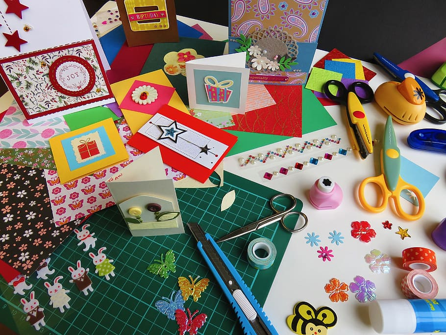
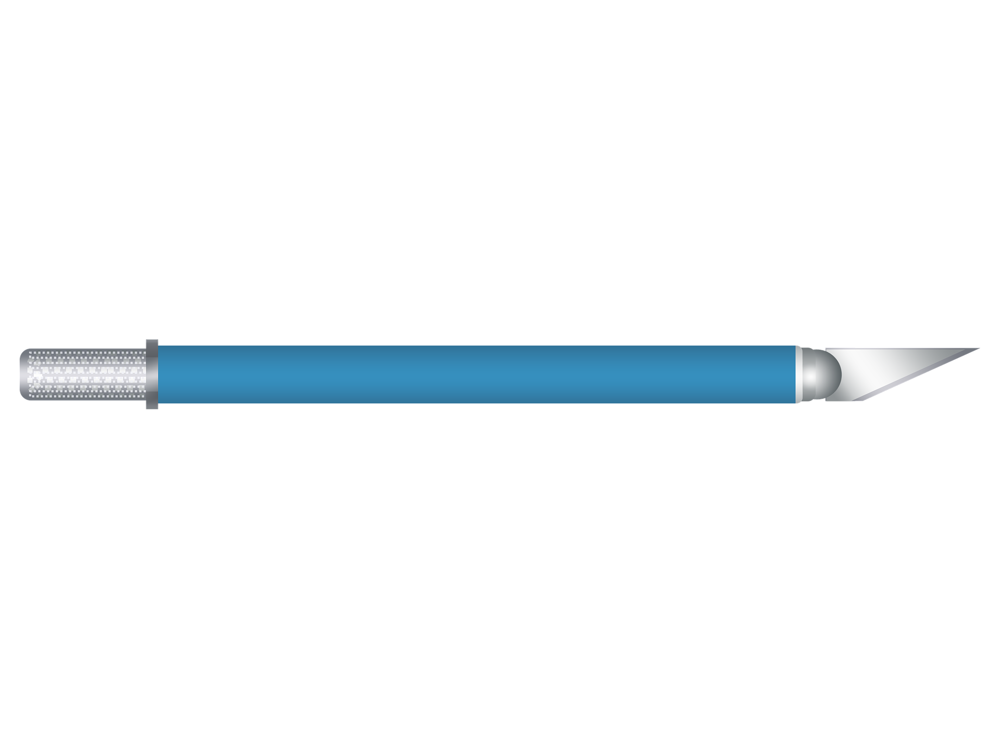
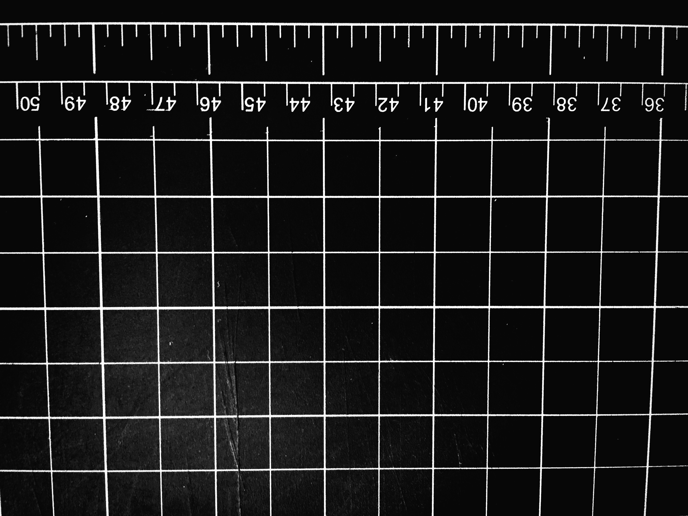
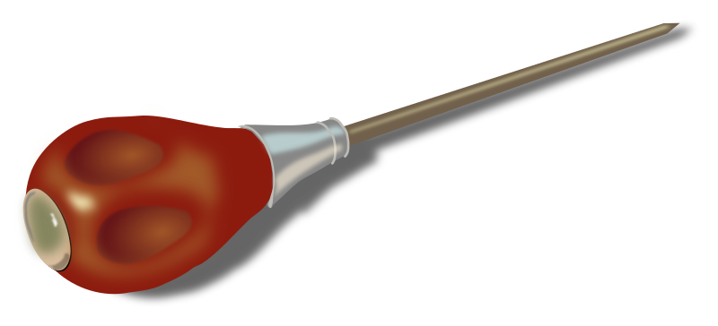
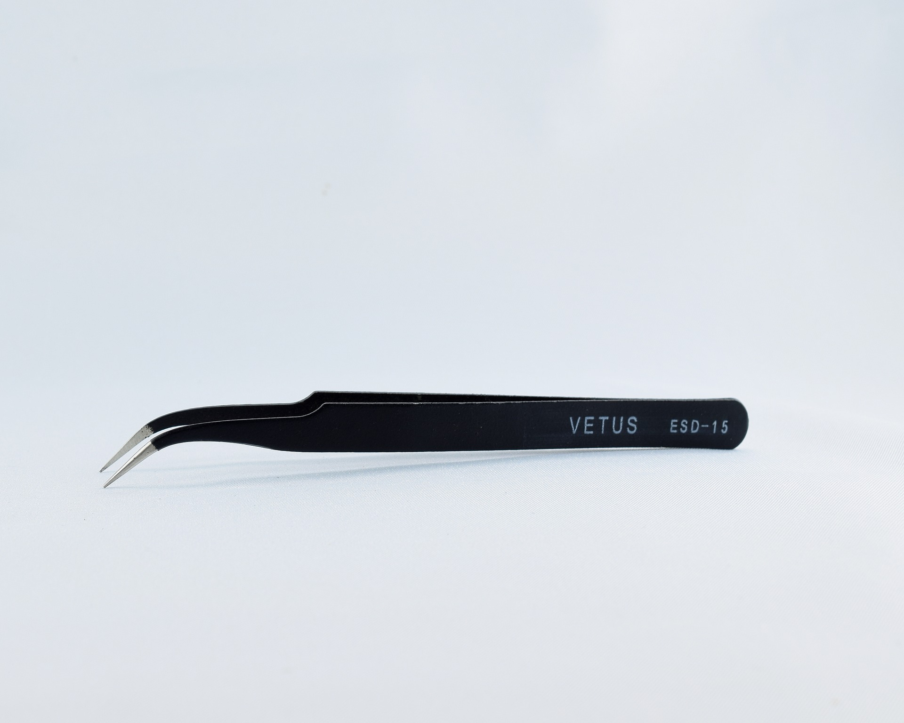
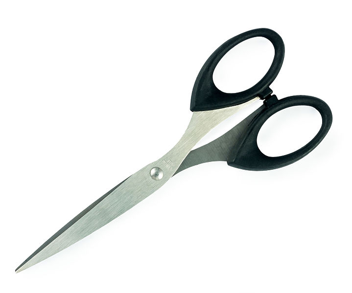
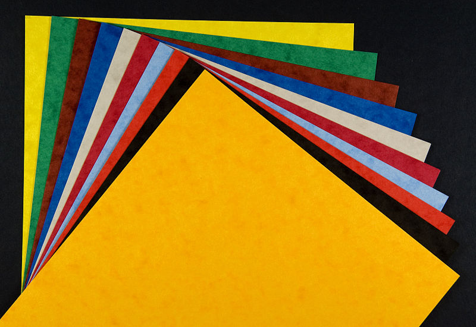

Some of the most common paper cutting/paper art tools are briefly described here!
The pen knives are almost no different from traditional utility knives. However, their pen-shaped body makes them easier to hold.
Cutting mats are made for the purpose of protecting both the blade and the desk while cutting using utility knives. Cutting mats are made out of plastic and have a certain amount of hardness so that the object that was being cut can lay smooth and flat, while protecting the blades that could easily damage on hard surfaces.
Cutting mats can usually last for around one to two years as long as you don’t use brute force every time you cut or get oil onto them. Typically, you can run cutting mats through cold water for cleaning purposes and continue to use them after they dry.
Some benefits of using white glue is that it sticks sturdily, capable of resisting slight acids and bases, and that it is easy to use and relatively inexpensive.

The use of awl is to make creases for creations that require folding, so that papers can be easier to fold when you try to do so without folding them beforehand.
You could also use finished pen refills, the pointy end of a compass (that you used in math lessons), or the back of the utility knives instead.
To staple two pieces of paper together for the purpose of a cleaner finished product. The technique is explained here (in the homepage under 'Step 2').

Tweezers are used to piece together or pick out very tiny sections.
Many types of paper art require scissors, such as the Chinese paper cutting art, which is done mostly with scissors.
The most important part of paper art is, of course, paper! There are many different types, such as pearl paper and wax paper, and many different colors of paper.
You have now reached the end of this page. Would you like to jump to the top?